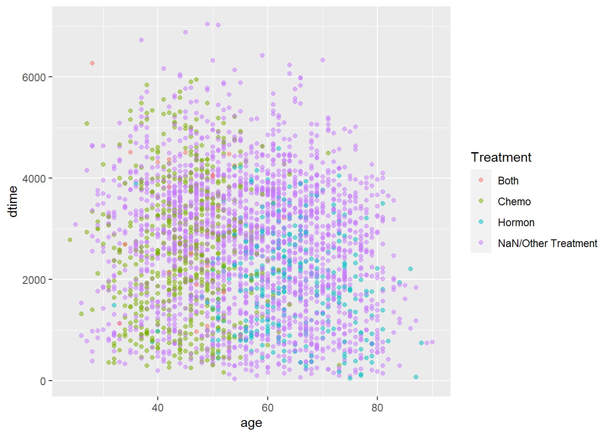

Chapter6 size vs. Survival Times
size vs. dtime
KM_None_Death <- survfit(Surv(dtime, death) ~ size, data = rotterdam)
plot(KM_None_Death, conf.type = "plain", col = c("blue","red","purple"), xlab="Days", ylab="Survival", lty = 1:3)
size vs. rtime
KM_None_Recur <- survfit(Surv(rtime, recur) ~ size, data = rotterdam)
plot(KM_None_Recur, conf.type = "plain", col = c("blue","red","purple"), xlab="Days", ylab="Survival", lty = 1:3)